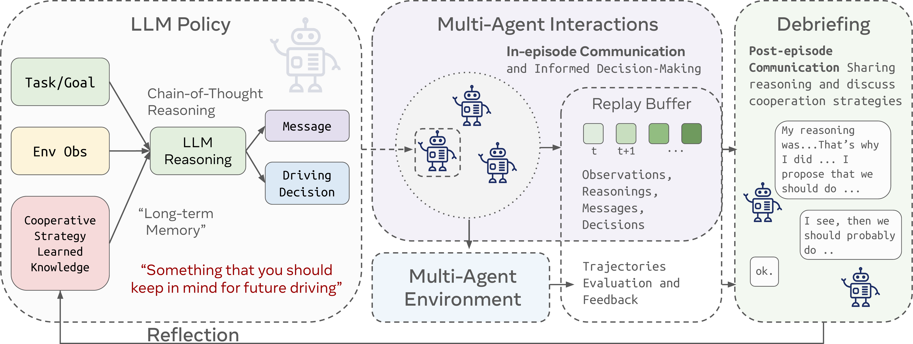

Abstract
Past work has demonstrated that autonomous vehicles can drive more safely if they communicate with one another than if they do not. However, their communication has often not been human-understandable. Using natural language as a vehicle-to-vehicle (V2V) communication protocol offers the potential for autonomous vehicles to drive cooperatively not only with each other but also with human drivers. In this work, we propose a suite of traffic tasks in autonomous driving where vehicles in a traffic scenario need to communicate in natural language to facilitate coordination in order to avoid an imminent collision and/or support efficient traffic flow. To this end, this paper introduces a novel method, LLM+Debrief, to learn a message generation and high-level decision-making policy for autonomous vehicles through multi-agent discussion. To evaluate LLM agents for driving, we developed a gym-like simulation environment that contains a range of driving scenarios. Our experimental results demonstrate that LLM+Debrief is more effective at generating meaningful and human-understandable natural language messages to facilitate cooperation and coordination than a zero-shot LLM agent.
TalkingVehiclesGym
TalkingVehiclesGym is a multi-agent gymnasium simulation environment for autonomous driving that contains a range of driving scenarios.
It is designed to evaluate the performance of multi-agent communication and collaboration for cooperative driving.

LLM+Debrief Method

LLM+Debrief Agent Framework and Agent Learning PipelineAgent Policy
- In-Context Knowledge
- Chain-of-Thought Reasoning
Agent Learning
- Replay Buffer
- Batch Sampling
- Debrief
Results
Data Diversity

We score the visual diversity of data based on distance in embedding space, with higher distances better, and find that AutoRT is consistently more visually diverse than RT-1 data. Highest diversity comes from episodes collected with human assistance.
| Collect Method | Language L2 Dist |
|---|---|
| Language Table | 0.988 |
| BC-Z | 1.070 |
| RT-1 | 1.073 |
| AutoRT w/PaLI | 1.100 |
| AutoRT w/FlexCap | 1.137 |
We score language instruction diversity similarly, and find AutoRT data has higher average distance between language embeddings than previous robotics datasets.
Affordance and Robot Constitution
To measure the effect of the robot constitution, we set up deliberately adversarial scenes that included lifelike toy animals or sharp items. We then compare the following setups:
- Task Generation: no constitution vs constitution
- Filtering: no filter vs minimal filter vs constitutional filter
Using the robot constitution at both generation time and filtering time leads to the highest fraction of valid tasks.
| No Constitution | Constitution | |
|---|---|---|
| Filter | % Valid | % Valid |
| None | 18% | 70% |
| Minimal | 15% | 67% |
| Constitutional | 57% | 83% |
Learned Policy Samples
To sanity check the data, we finetune an RT-1 checkpoint on data collected by AutoRT. RT-1 is used instead of RT-2 since it trained more quickly and cheaply. Videos below are from the finetuned policy running at 1x.


Future Work
Talking Vehicles is a promising step towards AI agents that can purposefully communicate with each other and humans in a natural language to coordinate on a task via self-play among agents. Future work will be directed towards creating more robust and diverse learned policies, integrating larger multimodal models, and studying the learning methods that can train the agents to perform more complex tasks.
BibTeX
@article{cui2025talking,
title={Talking Vehicles: Towards Natural Language Communication for Cooperative Autonomous Driving via Self-Play},
author={Jiaxun Cui and Chen Tang and Jarrett Holtz and Janice Nguyen and Alessandro G. Allievi and Hang Qiu and Peter Stone},
year={2025},
eprint={TODO},
archivePrefix={arXiv},
primaryClass={TODO}
}